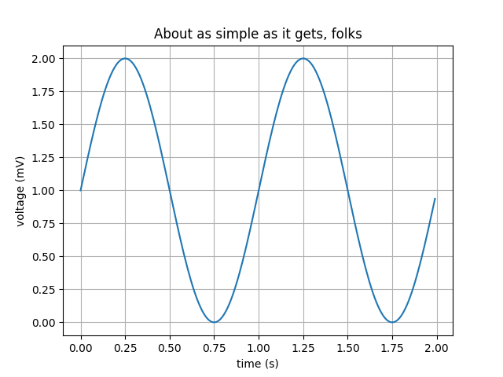

Plotting with Matplotlib#
Matplotlib is a Python 2D plotting library which produces publication quality figures in a variety of hardcopy formats and interactive environments across platforms. Matplotlib can be used in Python scripts, the Python and IPython shells, the Jupyter notebook, web application servers, and four graphical user interface toolkits.
Matplotlib tries to make easy things easy and hard things possible. You can generate plots, histograms, power spectra, bar charts, errorcharts, scatterplots, etc., with just a few lines of code.
Matplotlib has also become the gold standard for creating figures for scientific publications. It is heavily inspired by MATLAB, and migrating from MATLAB to matplotlib should be relatively easy.
MATLAB-style API vs object-oriented API#
matplotlib provides two different ways of creating graphs. The first is via the pyplot API which aims to replicate the behaviour of MATLAB where each pyplot function makes some change to a figure: e.g., creates a figure, creates a plotting area in a figure, plots some lines in a plotting area, decorates the plot with labels, etc. pyplot is mainly intended for interactive plots and simple cases of programmatic plot generation, and you can find more information here.
At its core, matplotlib is object-oriented. We strongly recommend directly working with the objects, as it provides much more control and customization over your plots, especially when working with multiple figures or subplots.
In many cases you will create a Figure and one or more Axes using pyplot.subplots and from then on only work on these objects. This will be the philosophy used throughout this tutorial.
General concepts#
We will begin by introducing the basic terminology associated with the matplotlib library. This is best illustrated with a picture

A few key aspects:
Figure#
The whole figure. The figure keeps track of all the child Axes, a smattering of ‘special’ artists (titles, figure legends, etc), and the canvas. (Don’t worry too much about the canvas, it is crucial as it is the object that actually does the drawing to get you your plot, but as the user it is more-or-less invisible to you). A figure can have any number of Axes, but to be useful should have at least one.
Axes#
This is what you think of as ‘a plot’, it is the region of the image with the data space. A given figure can contain many Axes, but a given Axes object can only be in one Figure. The Axes contains two (or three in the case of 3D) Axis objects (be aware of the difference between Axes and Axis) which take care of the data limits. Each Axes has a title (set via set_title()), an x-label (set via set_xlabel()), and a y-label set via set_ylabel()).
The Axes class and its member functions are the primary entry point to working with the object-oriented interface.
Learning from examples#
The best way to illustrate and understand the way matplotlib functions is to give a series of examples. We will first run through several typical use cases for a graphing library and how one creates them with matplotlib.
Looking at examples around the web is also the best way to learn how to use matplotlib. There is a very large collection of examples on the matplotlib website itself (https://matplotlib.org/stable/gallery/index.html), as well as thousands of posts on stackoverflow.com.
matplotlib is often seen as requiring more lines of code that other tools such as Gnuplot, but also comes with very fine control and is able to do things no other library can do. If you feel that a large amount of code is necessary to produce just the simplest of graphs, hopefully the benefits of the syntax will become clear by the end of this tutorial.
Warning
We have added one exercise per example below; it would take some time to complete all of them.
We suggest you try a couple to begin with, and then skip over the ones that do not interest you to focus on a select few.
If one example reminds you of a case you were once yourself confronted with during your work/research, you can also try to expand the example to see how one would achieve your old case using matplotlib, instead of following the suggested exercise.
We import here numpy which will be used to generate all the data we visualize in this tutorial, as well as the plotting module of matplotlib (matplotlib contains other things than just plotting, e.g. modules to manipulate colors etc.)
import numpy as np
import matplotlib.pyplot as plt
We here activate the widget backend which provides interactive plots in Jupyter (for static plots, you can use the inline backend, which is the current default for Jupyter)
# %matplotlib widget
Note: if you are running any of the code snippets below outside of a Jupyter notebook (e.g. in an IPython console), you will need to explicitly show the figure by adding fig.show() at the end of the snippet.
A simple 1D line plot#
# Data for plotting
t = np.linspace(0.0, 2.0, 100)
s = 1 + np.sin(2 * np.pi * t)
# Create the Figure and Axes in one go using the `subplots` function.
# The first two arguments of the subplots function are the number of rows and columns, respectively.
fig, ax = plt.subplots(1, 1)
# Make a simple x,y line plot on out axes object
ax.plot(t, s)
# Decorate the axes with axis labels and title
ax.set(
xlabel="time (s)", ylabel="voltage (mV)", title="About as simple as it gets, folks"
)
plt.show()
Exercise:
Look at the documentation and try to add a grid to the axes to obtain 
Change the line color to red, the line thickness to 4 and the line style to dashed.
Add some random y error bars.
{kind=link}
Solution:
Multiple subplots in one figure#
x = np.linspace(0.0, 4.0)
y1 = np.cos(2 * np.pi * x) * np.exp(-x)
y2 = np.cos(2 * np.pi * x)
fig, ax = plt.subplots(2, 1) # note here that ax is now a list of axes
ax[0].plot(x, y1, "o-")
ax[0].set_title("A tale of 2 subplots")
ax[0].set_ylabel("Damped oscillation")
ax[1].plot(x, y2, ".-")
ax[1].set_xlabel("time (s)")
ax[1].set_ylabel("Undamped")
plt.show()
Exercise:
Try adding two more subplots on the right-hand side of the existing ones to have a 2x2 grid of plots. The new subplots should show a zoom onto a particular area of the left subplots.
Solution:
2D image/heatmap with uniformly sized pixels#
N = 100
M = 50
x = np.arange(N + 1)
y = np.arange(M + 1)
z = np.random.random([M, N])
fig, ax = plt.subplots()
im = ax.imshow(z, origin="lower", extent=[x[0], x[-1], y[0], y[-1]], aspect="auto")
cb = plt.colorbar(im) # adds the colorbar that applies to the `im` object
cb.ax.set_ylabel("Counts")
ax.set_xlabel("x coordinate")
ax.set_ylabel("y coordinate")
ax.set_title("A 2D image")
plt.show()
Exercise:
Change the colormap to one of the many pre-defined colormaps that ship with Matplotlib.
In a second step, try to set the colorbar limits to [0.2, 0.8].
Solution:
2D image/heatmap with non-uniformly sized pixels#
N = 10
M = 5
x = np.arange(N + 1) ** 2
y = np.arange(M + 1)
z = np.random.random([M, N])
fig, ax = plt.subplots()
pcmesh = ax.pcolormesh(x, y, z)
cb = plt.colorbar(pcmesh)
cb.ax.set_ylabel("Counts")
ax.set_xlabel("x coordinate")
ax.set_ylabel("y coordinate")
ax.set_title("A 2D image with non-equal sized pixels")
plt.show()
Exercise:
The pcolormesh function is slow for large datasets/images. See this for yourself by making the data above much larger and try to re-plot.
Solution:
2D filled/empty contour plot#
N = 100
xx = np.linspace(1.0, 5.0, N)
yy = np.linspace(1.0, 5.0, N)
x, y = np.meshgrid(xx, yy)
z = np.sin(x) ** 10 + np.cos(10 + y * x) * np.cos(x)
fig, ax = plt.subplots(3, 1, figsize=(9, 9))
pcmesh = ax[0].pcolormesh(x, y, z, cmap="RdBu", shading="nearest")
cb1 = plt.colorbar(pcmesh, ax=ax[0])
cb1.ax.set_ylabel("Counts")
ax[0].set_title("pcolormesh")
contf = ax[1].contourf(x, y, z, cmap="RdBu")
cb2 = plt.colorbar(contf, ax=ax[1])
cb2.ax.set_ylabel("Counts")
ax[1].set_title("filled contours")
cont = ax[2].contour(x, y, z, cmap="RdBu")
cb3 = plt.colorbar(cont, ax=ax[2])
cb3.ax.set_ylabel("Counts")
ax[2].set_title("contours")
# Adjust spacing between subplots so `ax1` title and `ax0` tick labels
# don't overlap
fig.tight_layout()
Exercise:
Change the number of filled contours to 30 in the middle panel.
Solution:
Histogram#
y = np.random.normal(50.0, scale=20.0, size=1000)
fig, ax = plt.subplots()
ax.hist(y, bins=50)
ax.set_xlabel("Some x label [m]")
ax.set_ylabel("A fancy y label [kg]")
ax.set_title("A 1D histogram plot")
plt.show()
Exercise:
Change the bins to be 30 log-spaced bins between 1 and 150.
Solution:
2D scatter plot with different symbol sizes and colors#
N = 100
x = np.random.random(N)
y = np.random.random(N)
z = np.random.random(N)
s = 300.0 * np.random.random(N)
fig, ax = plt.subplots()
scat = ax.scatter(x, y, c=z, s=s)
cb = plt.colorbar(scat)
cb.ax.set_ylabel("The colored quantity")
ax.set_xlabel("x coordinate")
ax.set_ylabel("y coordinate")
ax.set_title("A 2D scatter plot")
# produce a legend with a cross section of sizes from the scatter
handles, labels = scat.legend_elements(prop="sizes")
legend = ax.legend(handles, labels, loc="upper right", title="Sizes")
Exercise:
Change the scatter markers from circles to squares and change their opacity to 50%.
Solution:
Quiver (vectors) and stream plots#
N = 100
w = 5.0
xx = np.linspace(-w, w, N)
x, y = np.meshgrid(xx, xx)
u = -1.0 - x**2 + y
v = -1.0 + x - y**2
fig, ax = plt.subplots(1, 2, figsize=(9, 4))
M = 4
# Here we plot only 1 in every M^2 points to avoid over-crowding the figure
ax[0].quiver(x[::M, ::M], y[::M, ::M], u[::M, ::M], v[::M, ::M], scale=200.0)
ax[0].set_title("Quiver (vector field)")
ax[0].grid()
ax[1].streamplot(x, y, u, v)
ax[1].set_title("Streamlines")
plt.show()
Exercise:
Overplot the arrows or streamlines onto an image or contour plot of the velocity magnitude.
Change the color of the arrows or streamlines to reflect the velocity magnitude via a colormap.
Solution:
Patches: drawing geometric shapes#
import matplotlib.patches as mpatches
fig, ax = plt.subplots(figsize=(6, 6))
ax.add_patch(mpatches.Rectangle([0.0, 0.0], 1.0, 2.0))
ax.add_patch(mpatches.Circle([3.0, 3.0], 1.6, color="#FF5733"))
ax.add_patch(mpatches.Polygon([[1.0, 1.5], [3.0, 3.0], [4.0, 0.5]], color="#4CFF33"))
ax.set_xlim([-0.5, 5.0])
ax.set_ylim([-0.5, 5.0])
plt.show()
Exercise:
Add an arrow and some text in the figure above.
Solution:
Grouped bar chart with labels#
labels = ["G1", "G2", "G3", "G4", "G5"]
cats_means = [20, 34, 30, 35, 27]
dogs_means = [25, 32, 34, 20, 25]
x = np.arange(len(labels)) # the label locations
width = 0.35 # the width of the bars
fig, ax = plt.subplots()
rects1 = ax.bar(x - width / 2, cats_means, width, label="Cats")
rects2 = ax.bar(x + width / 2, dogs_means, width, label="Dogs")
# Add some text for labels, title and custom x-axis tick labels, etc.
ax.set_ylabel("Scores")
ax.set_title("Scores by group and animal")
ax.set_xticks(x)
ax.set_xticklabels(labels)
leg = ax.legend()
Exercise:
Attach a text label above each bar in rects1 and rects2, displaying its height.
Solution:
Pie chart#
# Pie chart, where the slices will be ordered and plotted counter-clockwise:
labels = "Frogs", "Hogs", "Dogs", "Logs"
sizes = [15, 30, 45, 10]
explode = (0, 0.1, 0, 0) # only "explode" the 2nd slice (i.e. 'Hogs')
fig1, ax1 = plt.subplots()
ax1.pie(
sizes, explode=explode, labels=labels, autopct="%1.1f%%", shadow=True, startangle=90
)
ax1.set_aspect("equal") # Equal aspect ratio ensures that pie is drawn as a circle.
Exercise:
Create 4 subplots where a different section is exploded in each subplot.
Solution:
Log plots#
# Data for plotting
t = np.arange(0.01, 20.0, 0.01)
# Create figure
fig, ((ax1, ax2), (ax3, ax4)) = plt.subplots(2, 2)
# log y axis
ax1.semilogy(t, np.exp(-t / 5.0))
ax1.set(title="semilogy")
ax1.grid()
# log x axis
y = np.sin(2 * np.pi * t)
ax2.semilogx(t, y)
ax2.set(title="semilogx")
ax2.grid()
# log x and y axis
ax3.loglog(t, 20 * np.exp(-t / 10.0), base=2)
ax3.set(title="loglog base 2")
ax3.grid()
# With errorbars: clip non-positive values
# Use new data for plotting
x = 10.0 ** np.linspace(0.0, 2.0, 20)
y = x**2.0
ax4.set_xscale("log")
ax4.set_yscale("log")
ax4.set(title="Errorbars go negative")
ax4.errorbar(x, y, xerr=0.1 * x, yerr=5.0 + 0.75 * y)
# ylim must be set after errorbar to allow errorbar to autoscale limits
ax4.set_ylim(bottom=0.1)
fig.tight_layout()
Exercise:
Create a 2D image where the x axis is logarithmic.
Solution:
Controlling axis placement#
This example will illustrate how to place axes in exact position with respect to the figure, using the add_axes() function. This is useful for placing side panels around a central figure for instance.
N = 1000
nbins = 50
x = np.random.normal(0.0, scale=20.0, size=N)
y = np.random.normal(0.0, scale=20.0, size=N)
dx = 0.65
xymin = 0.1
fig = plt.figure(figsize=(8, 8))
# Use: add_axes([x_lower_left, y_lower_left, size_x, size_y])
ax1 = fig.add_axes([xymin, xymin, dx, dx]) # Central figure
ax2 = fig.add_axes([xymin + dx, xymin, 0.2, dx]) # Right histogram
ax3 = fig.add_axes([xymin, xymin + dx, dx, 0.2]) # Top histogram
ax1.scatter(x, y)
ax2.hist(
y, bins=nbins, orientation="horizontal"
) # Note "horizontal" here refers to horizontal bars
ax3.hist(x, bins=nbins)
# Set the ticks on the histogram axes to the right and top to avoid overlap on main panel
ax2.yaxis.tick_right()
ax3.xaxis.tick_top()
Exercise:
Connect the axes of the main panel and subplots so that zooming in on the central panel also zooms in on the histograms (hint: search for “shared” axes).
Solution:
Interactive 2D heatmap with slider through 3D data cube#
matplotlib ships with its own set of widgets which allow to create very useful and capable interactive data visualizations. In this example, we plot a 2D slice through a 3D data cube, and use a slider to navigate the 3rd dimension, updating the slice as we move the slider (note that performance can vary depending on if you are running the notebook kernel locally or remotely).
from matplotlib.widgets import Slider
data = np.random.random([10, 10, 10])
idx = 0
fig = plt.figure()
ax = fig.add_subplot(111)
fig.subplots_adjust(bottom=0.15)
im_object = ax.imshow(data[:, :, idx], interpolation="nearest")
ax.set_xlabel("x coordinate")
ax.set_ylabel("y coordinate")
ax.set_title("2D heatmap with slider")
cb = plt.colorbar(im_object)
cb.ax.set_ylabel("Temperature")
slider_ax = fig.add_axes([0.23, 0.02, 0.56, 0.04])
slider = Slider(slider_ax, "Depth", 0, data.shape[2] - 1, valinit=idx)
def update_depth(val):
idx = int(round(slider.val))
im_object.set_data(data[:, :, idx])
return
slider.on_changed(update_depth)
plt.show()
Exercise:
Connect a mouse scroll event to the figure canvas to also navigate the 3rd dimension with the mouse wheel (see matplotlib’s event handling).
Solution:
Interactive linked scatter and histogram#
In this example, we use the RectangleSelector to select points in a 2D scatter plots that represent the x and y coordinates of some data points. The points also have a 3rd dimension/property, e.g., temperature. The temperature of all the points is histogrammed in the right-hand side panel. The histogram for only the selected points is overlaid with a red color and updated every time the selector is moved/resized.
from matplotlib.widgets import RectangleSelector
fig, ax = plt.subplots(1, 2, figsize=(9, 5))
N = 1000
x = np.random.normal(0.0, scale=20.0, size=N)
y = np.random.normal(0.0, scale=20.0, size=N)
# Make a bimodal distribution for the temperature
z = np.concatenate(
[
np.random.normal(-50.0, scale=20.0, size=N // 2),
np.random.normal(50.0, scale=20.0, size=N // 2),
]
)
ax[0].set_xlabel("X coordinate")
ax[0].set_ylabel("Y coordinate")
ax[1].set_xlabel("Temperature")
ax[1].set_ylabel("Counts")
# Make scatter plot on the left
ax[0].scatter(x, y, alpha=0.7)
# Make histogram on the right, with well defined bins (they will be re-used later)
bins = np.linspace(np.amin(z) - 1.0, np.amax(z) + 1.0, 50)
ax[1].hist(z, bins=bins)
# Save original patches so that we know how many to delete
orig_patches = set(ax[1].patches)
# Function to be called when rectangle selector is updated
def update_histogram(eclick, erelease):
x1, w1 = eclick.xdata, eclick.ydata
x2, w2 = erelease.xdata, erelease.ydata
# Find all points that lie inside rectangle selector limits
select = np.where(
np.logical_and(
y >= min(w1, w2),
np.logical_and(
y <= max(w1, w2), np.logical_and(x >= min(x1, x2), x <= max(x1, x2))
),
)
)
# Delete all patches (bars) apart from original ones
for patch in set(ax[1].patches) - orig_patches:
patch.remove()
# Draw new red histogram from selected points
ax[1].hist(z[select], bins=bins, alpha=0.5, color="r")
# Create rectangle selector and install callback to update function
selector = RectangleSelector(
ax[0],
update_histogram,
useblit=True,
button=[1, 3], # don't use middle button
interactive=True,
)
Exercise:
Try to replace the
RectangleSelectorwith the LassoSelector or a different kind of selector (hint: in Jupyter notebooks, one has to make sure thatuseblit=Falsefor theLassoSelector).Try to add a
RectangleSelectorin the histogram panel that would highlight scatter points in the left panel.
Solution 1:
Solution 2: